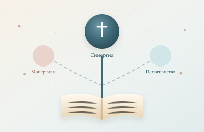
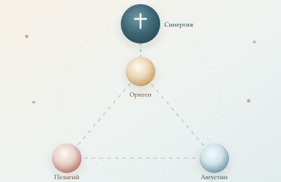
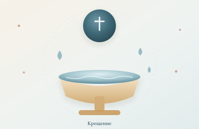
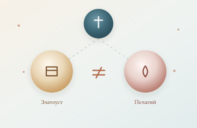
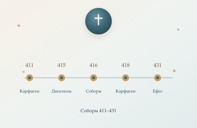
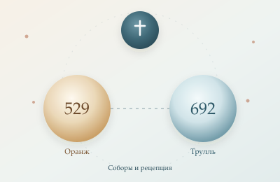
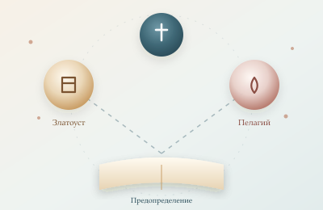
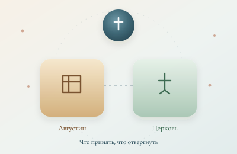
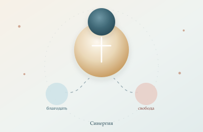

Оглавление книги
Девять частей прямого разбора. Части 5–9 объединяют несколько глав книги, чтобы сохранить подробность и не дробить аргумент.

Предисловие
Главный тезис книги и ложная дихотомия «монергизм или пелагианство».

Первородный грех
Вина или повреждение? Три модели, отцы и крещение младенцев.

Крещение младенцев
Практика, смысл и свидетельства до пелагианского спора.

Промежуточные выводы
Златоуст, Пелагий и ложная генеалогия «двух традиций».

Соборы I: Карфаген и Ефес
Главы 5–7: предыстория, Карфаген 418 и Ефес 431.

Соборы II: Оранж и Трулль
Главы 8–10: Оранж 529, Трулль 692 и итог по соборам.

Предопределение до Августина
Главы 11–13: введение, Златоуст и Пелагий.

Августин и православный ответ
Главы 14–16: Гадрумет, Марсель и учение о предопределении.

Заключение
Глава 17: логика благодати и итог книги.
Как читать
Если нужна более короткая ранняя версия, она собрана в Boosty-серии из 5 частей. Этот раздел — прямой и подробный разбор книги.